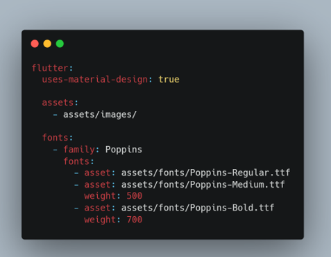

Praktikum 7
Laporan Praktikum Aplikasi Mobile
Praktikum 7
PENDAHULUAN
Modul praktikum ini merupakan kelanjutan dari pengembangan aplikasi "ResepKu" yang sebelumnya berfokus pada pengelolaan data dan status favorit. Pada tahap ini, aplikasi ditingkatkan tampilan antarmukanya agar lebih menarik dan informatif dengan mengintegrasikan elemen visual. Pengembang diperkenalkan pada cara memasukkan asset lokal seperti logo dan huruf (custom font) Poppins, serta cara menampilkan foto resep yang diambil secara langsung dari internet.
Selain penambahan elemen visual, modul ini mengajarkan teknik pengelolaan media yang efisien. Aplikasi dilengkapi dengan penanganan kondisi khusus (loading state) saat foto sedang diunduh dan kondisi darurat (error state) yang menampilkan gambar cadangan (placeholder) apabila terjadi kegagalan jaringan atau URL rusak. Pengoptimalan memori juga diterapkan melalui pembatasan ukuran decode gambar (cacheWidth) agar aplikasi tetap ringan.
Pengembangan dilanjutkan dengan implementasi variasi tampilan data menggunakan daftar memanjang (ListView) dan kisi berkolom (GridView). Pengguna diberikan fleksibilitas untuk beralih antara kedua moda tampilan tersebut melalui satu tombol di AppBar. Seluruh perubahan antarmuka ini dirancang agar tetap terhubung dan serasi dengan fitur-fitur yang telah dibuat pada modul sebelumnya, seperti sistem penyimpanan resep favorit.
TUJUAN
- Mahasiswa mampu mengelola Asset Lokal dan Font
- Mahasiswa mampu menampilkan dan mengelola Gambar dari Internet
- Mahasiswa mampu menyajikan data yang beragam dan fleksibel
ISI
1. Pertama-tama kita akan membuat kodingan yang berfungsi untuk mengatur penggunaan aset gambar dari folder assets/images/ serta mengaktifkan fitur Material Design pada aplikasi Flutter. Selain itu, kode tersebut mendaftarkan font Poppins dengan tiga variasi ketebalan, yaitu Regular, Medium, dan Bold, agar tampilan teks aplikasi lebih menarik dan konsisten.


2. Setelah itu kita akan buat kodingan yang berfungsi untuk menampilkan gambar resep dari internet menggunakan Image.network, dilengkapi dengan tampilan loading saat gambar sedang dimuat dan tampilan gambar pengganti jika terjadi kesalahan. Properti cacheWidth digunakan untuk mengatur ukuran gambar saat diproses agar penggunaan memori lebih hemat.

3. Selanjutnya kita buat kodingan yang berfungsi untuk menampilkan gambar resep dari URL menggunakan Image.network dengan ukuran tampilan menyesuaikan area melalui BoxFit.cover. Jika gambar masih diunduh, akan ditampilkan ikon sementara, sedangkan jika terjadi kesalahan seperti URL tidak valid atau koneksi terputus, aplikasi akan menampilkan gambar pengganti dari folder assets/images/placeholder.png.

4. Lalu kita buat kodingan yang berfungsi untuk membuat halaman utama aplikasi menggunakan Scaffold yang memiliki AppBar berisi logo, nama aplikasi, tombol favorit, dan tombol pengaturan yang akan membuka halaman SettingsPage ketika ditekan. Pada bagian body, ListView.builder digunakan untuk menampilkan daftar resep dari dummyRecipes secara dinamis dengan setiap resep ditampilkan menggunakan widget RecipeTile.


5. Kemudian buat kodingan yang berfungsi untuk membuat tampilan kartu resep yang dapat ditekan untuk membuka halaman DetailPage, sekaligus memantau status favorit melalui FavoriteProvider. Gambar resep ditampilkan menggunakan RecipeImage, sedangkan tombol ikon hati digunakan untuk menambahkan atau menghapus resep dari daftar favorit, dengan warna merah sebagai penanda jika resep sudah menjadi favorit.

6. Selanjutnya buat kodingan yang berfungsi untuk mengatur halaman utama agar dapat menampilkan resep dalam dua bentuk, yaitu list dan grid, menggunakan variabel _isGrid sebagai penanda tampilan yang sedang aktif. Tombol pada AppBar digunakan untuk mengganti tampilan melalui setState, sedangkan tombol favorit dan pengaturan tetap tersedia untuk membuka fitur masing-masing.

7. Setelah itu buat kodingan yang berfungsi untuk membuat DetailPage sebagai halaman stateful yang menerima data resep dan mengatur jumlah porsi melalui variabel _servings. Nilai awal porsi diambil dari data resep saat halaman dibuka, kemudian fungsi _addServing() digunakan untuk menambah porsi dan _removeServing() untuk mengurangi porsi dengan batas minimum satu porsi menggunakan setState().


8. Setelah itu buat kodingan yang berfungsi untuk mengatur fitur penyaringan resep berdasarkan jenis masakan menggunakan variabel _cuisine, serta menentukan apakah resep ditampilkan dalam bentuk list atau grid melalui _isGrid. Jika _cuisine bernilai null, semua resep akan ditampilkan, sedangkan jika jenis masakan dipilih, filteredRecipes hanya berisi resep yang sesuai dengan pilihan tersebut.

9. Kemudian buat kodingan yang berfungsi untuk membuat pilihan filter jenis masakan menggunakan ChoiceChip yang dapat digeser secara horizontal, mulai dari pilihan "Semua" hingga jenis masakan yang tersedia. Ketika salah satu pilihan ditekan, nilai _cuisine diperbarui menggunakan setState(), sehingga daftar resep di bawahnya otomatis ditampilkan dalam bentuk grid atau list sesuai pilihan _isGrid dan hanya menampilkan resep yang sesuai dengan filter.

10. Lalu buat kodingan yang berfungsi untuk mengubah metode _buildList() dan _buildGrid() pada file lib/pages/home_page.dart agar dapat menampilkan data resep yang sudah difilter berdasarkan kategori. Kedua metode tersebut perlu menerima parameter List<Recipe> recipes dengan mengimpor model recipe.dart, kemudian menggunakan recipes.length dan recipes[index] untuk menampilkan resep. Dengan demikian, hasil filter kategori akan tetap sesuai, baik ketika pengguna memilih tampilan list maupun grid.


11. Selanjutnya buat kodingan yang berfungsi untuk membuat halaman Favorit Saya dengan AppBar yang menampilkan judul dan tombol untuk menghapus seluruh resep favorit. Consumer<FavoriteProvider> digunakan untuk memantau jumlah resep favorit, sehingga tombol hapus otomatis dinonaktifkan jika belum ada resep favorit dan akan menampilkan dialog konfirmasi ketika ditekan.

12. Kemudian kita buat kodingan yang berfungsi untuk membuat pengguna dapat menghapus resep dari daftar favorit dengan cara menggeser item ke kiri. Widget ini menggunakan ValueKey(recipe.id) sebagai identitas unik, DismissDirection.endToStart untuk menentukan arah geser, serta latar belakang merah dengan ikon hapus. Ketika item berhasil dihapus, fungsi favorite.toggle(recipe) dijalankan dan aplikasi menampilkan SnackBar yang berisi nama resep tersebut.

13. Setelah itu buat kodingan yang berfungsi untuk menambahkan thumbnail gambar resep pada bagian leading di dalam ListTile pada FavoritePage. Gambar ditampilkan menggunakan RecipeImage yang dibungkus dengan ClipRRect agar sudutnya membulat, serta SizedBox berukuran 56 × 56 dp supaya tampilannya seragam dengan halaman utama. Sementara itu, judul resep, kategori masakan, dan tombol untuk menghapus resep dari daftar favorit tetap dipertahankan.


14. Selanjutnya buat kodingan yang berfungsi untuk menambahkan paket cached_network_image, kemudian ubah struktur tampilan halaman detail pada file lib/pages/detail_page.dart dengan menggunakan CustomScrollView dan SliverAppBar sebagai pengganti AppBar biasa. Atur SliverAppBar dengan pinned: true dan expandedHeight: 260 agar bilah judul tetap terlihat saat halaman digulir. Selanjutnya, gunakan FlexibleSpaceBar untuk menampilkan judul resep dan foto sebagai latar belakang melalui CachedNetworkImage, yang dilengkapi indikator saat gambar dimuat serta gambar pengganti jika terjadi kesalahan. Dengan begitu, gambar dapat disimpan dalam cache disk sehingga tidak perlu diunduh kembali setiap kali aplikasi dibuka.

15. Setelah itu buat kodingan yang berfungsi untuk masukkan informasi ringkasan resep, pengaturan jumlah porsi, dan judul bagian bahan ke dalam SliverToBoxAdapter. Widget ini digunakan sebagai pembungkus Column agar elemen-elemen tersebut dapat ditampilkan dan digulir bersama dalam CustomScrollView. Di dalamnya terdapat informasi kategori resep, Card untuk mengatur jumlah porsi (_servings), perhitungan total kalori, serta judul bagian Bahan.

16. Terakhir kita buat kodingan yang berfungsi tampilkan daftar bahan resep menggunakan SliverList.builder yang dibungkus dengan SliverPadding. Berbeda dengan penggunaan perulangan for di dalam ListView, metode ini menampilkan setiap bahan menggunakan ListTile secara bertahap sesuai kebutuhan tampilan (lazy loading). Dengan itemCount: recipe.ingredients.length, seluruh bahan resep dapat ditampilkan di dalam CustomScrollView dengan proses pengguliran yang lebih efisien.

17. Selanjutnya kita akan membuat Langkah D2.

18. Terakhir kita akan membuat dan mengerjakan Langkah C3.
Lebar kartu = 164 dp
Tinggi kartu = 218.67 dp
PERTANYAAN REFLEKTIF
Pada skenario 3 dan 4 Langkah D.2, status favorit tetap sama walaupun tampilan berganti dari grid ke list. Padahal RecipeGridCard dan RecipeTile adalah dua widget yang berbeda. Jelaskan mengapa, dengan mengaitkannya pada Modul 6.
Status favorit tetap terjaga meskipun pengguna berganti tampilan antara RecipeGridCard dan RecipeTile, karena data favorit dikelola secara terpusat oleh FavoriteProvider yang merupakan turunan ChangeNotifier dari Modul 6 dan dibagikan ke seluruh aplikasi melalui MultiProvider. Saat ikon hati ditekan, fungsi FavoriteProvider.toggle() akan memperbarui daftar _items dan menjalankan notifyListeners(). Dengan demikian, RecipeGridCard maupun RecipeTile yang menggunakan context.watch<FavoriteProvider>().isFavorite(recipe) akan selalu mendapatkan informasi status favorit terbaru dari sumber data yang sama.
Di dalam loadingBuilder terdapat baris if (loadingProgress == null) return child;. Apa yang akan tampil jika baris tersebut dihapus? Jelaskan alasannya.
Jika baris if (loadingProgress == null) return child; dihapus, gambar resep tidak akan ditampilkan meskipun proses pengunduhan sudah selesai. Akibatnya, aplikasi akan terus menampilkan tampilan loading berupa kotak dengan ikon Icons.restaurant_menu. Hal ini terjadi karena loadingBuilder dipanggil berulang kali selama gambar diunduh, dan nilai loadingProgress akan menjadi null ketika proses pengunduhan selesai. Kondisi tersebut digunakan sebagai penanda agar widget child dikembalikan sehingga gambar resep dapat ditampilkan pada layar.
Hitung berapa pixel foto thumbnail yang di-decode dengan dan tanpa cacheWidth: 168, jika foto asli dari server berukuran 1200 × 800 pixel. Apa akibatnya bagi memory ketika datanya menjadi 50 resep pada Modul 8?
Tanpa menggunakan cacheWidth, gambar akan diproses dengan ukuran piksel aslinya sehingga membutuhkan memori lebih besar. Sebaliknya, penggunaan cacheWidth: 168 akan memperkecil ukuran gambar yang diproses dengan tetap mempertahankan rasio aspek, sehingga jumlah piksel dan penggunaan memori menjadi lebih sedikit. Jika jumlah resep bertambah pada Modul 8, penggunaan gambar tanpa cacheWidth dapat membebani RAM perangkat, menyebabkan proses scrolling menjadi lambat, bahkan berisiko membuat aplikasi terhenti karena kehabisan memori.
Logo memakai Image.asset, sedangkan foto resep memakai Image.network. Mengapa logo tidak sebaiknya diambil dari internet, dan mengapa foto resep tidak dimasukkan ke asset?
Logo aplikasi menggunakan Image.asset karena merupakan gambar identitas yang bersifat tetap dan harus dapat ditampilkan langsung tanpa memerlukan koneksi internet. Sementara itu, foto resep menggunakan Image.network karena datanya bersifat dinamis dan dapat terus bertambah dari server. Jika seluruh foto resep disimpan dalam folder assets, ukuran file instalasi aplikasi (APK) akan menjadi lebih besar dan setiap penambahan atau perubahan foto mengharuskan pengguna memperbarui aplikasi.
KESIMPULAN
Dari praktikum kita kali ini, aplikasi "ResepKu" berhasil ditingkatkan dari sekadar tampilan teks biasa menjadi aplikasi yang kaya visual dan responsif melalui penerapan asset lokal, custom font, serta pemuatan foto dari internet yang aman dari kendala koneksi.